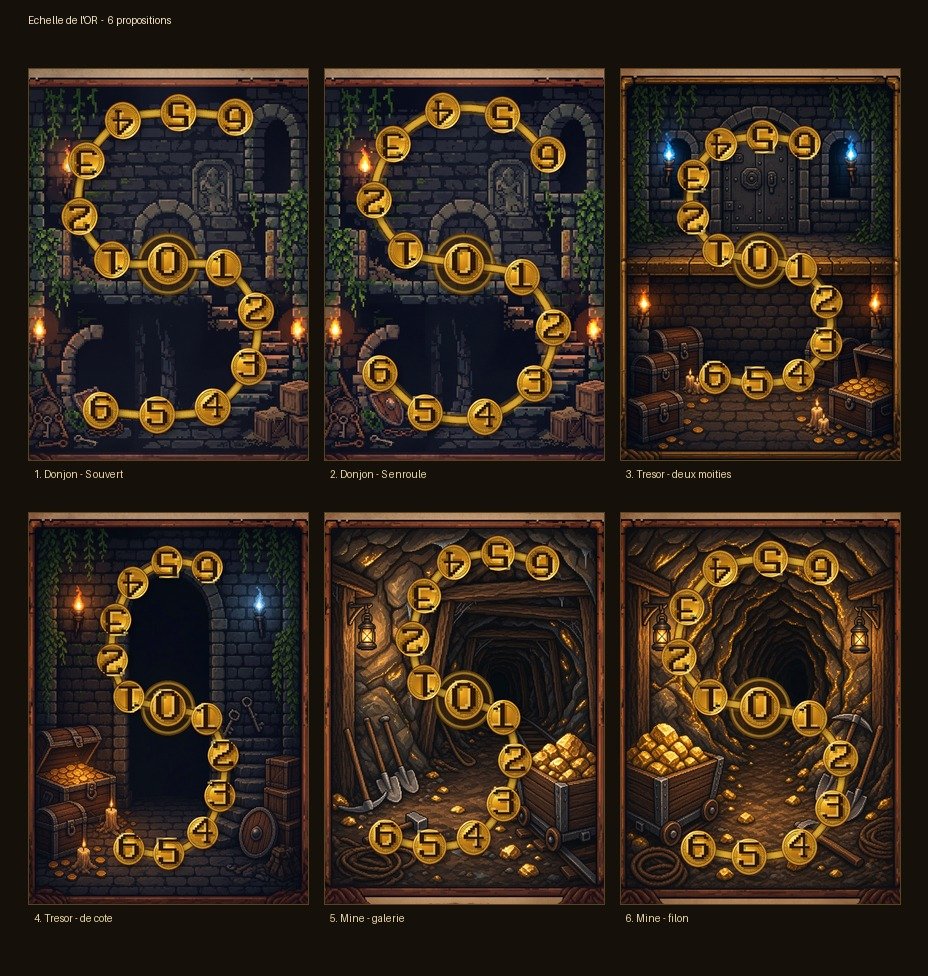
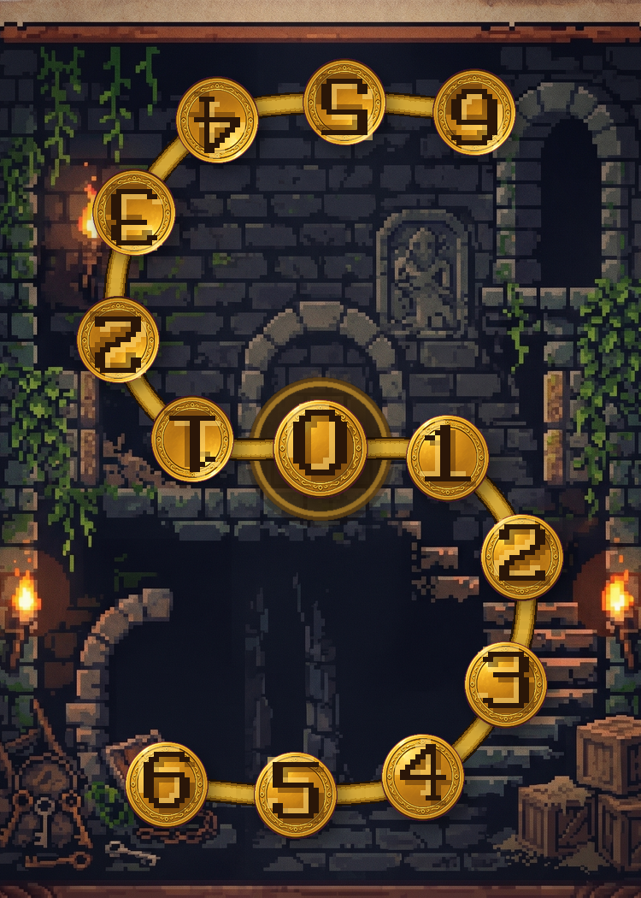
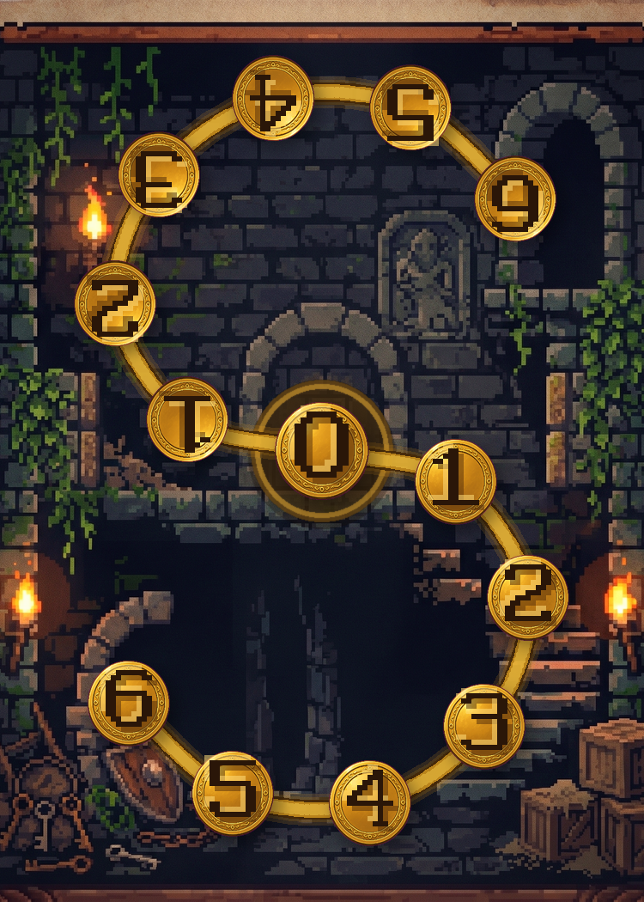
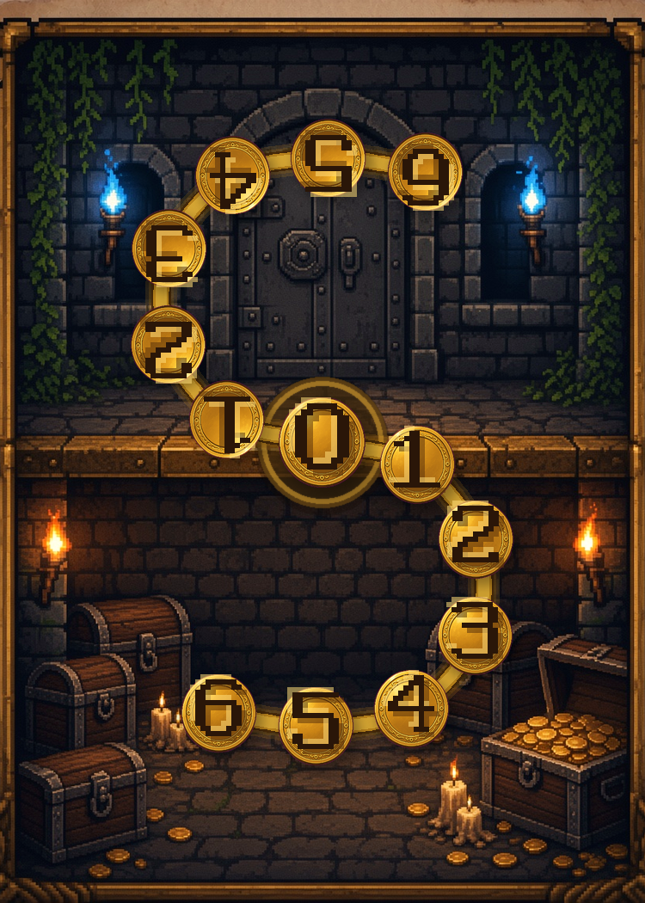
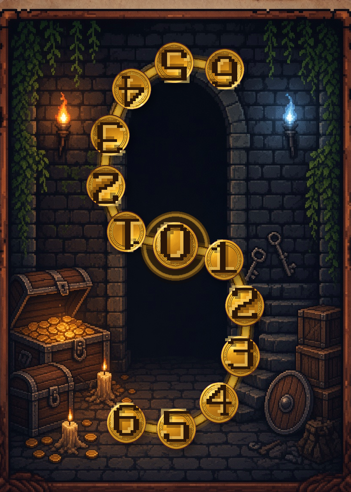
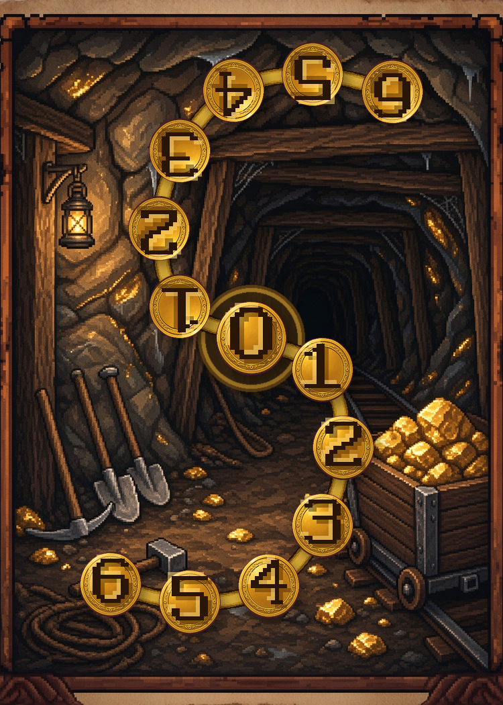
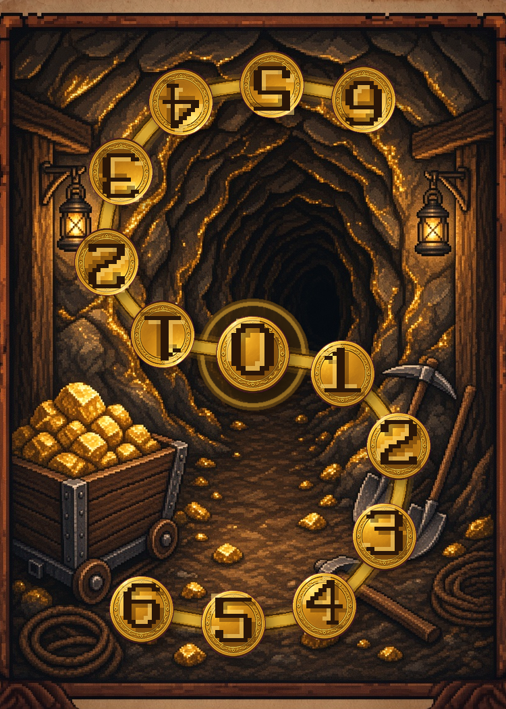

Pièces rondes, piste en serpentin (pas la grille carrée).
Chiffres espacés à pas plus régulier. Côté adverse tourné de 180°.
Deux cartes sur ton donjon, deux salles au trésor avec l’autre côté distinct,
deux mines.


Donjon (ton fond) — S ouvert, pièces rondes, pas plus régulier

Donjon (ton fond) — S plus enroulé, virages plus ronds

Salle au trésor — bas = coffres, haut = porte, 0 sur le seuil

Salle au trésor de côté — coffres à gauche, escalier à droite

Mine d’or — galerie et wagonnet, S ouvert

Mine d’or — filons dans la roche, S un peu plus ample